群聊
本章介绍如何新建群聊，以及在群聊窗口里收发消息、@提醒成员、查看成员与群文件，使用群公告、群备忘、群问答和接龙等协作功能。管理群成员与群设置的方法见下一章「群管理」。
- 适用：全体员工
- 标有「仅群主 / 管理员」的操作需要相应的群角色
新建群聊

- 在主面板点第三个页签（群组），这里列出 我的群聊，每个群显示群号和人数。
- 点右下角的 ＋ 建群，打开「新建群聊」窗口。
- 在左侧选人：在顶部的搜索框里输入姓名搜索联系人，或者直接在下面的组织架构里勾选成员。选中的人会出现在右侧 已选成员 列表中，点某人右侧的 × 可以把他移除，左下角显示「已选 N 人」。
- 按需填写 群聊名称（选填）。不填时群名由成员的名字自动生成，之后成员有变化也会自动更新；在群管理里设定过群名后就不再自动变化。
- 选择 群类型：普通群 或 帖子群。
- 点 创建群聊，提示「群聊创建成功。」后，新群就出现在群组页签里。
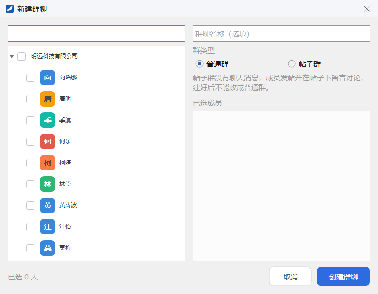
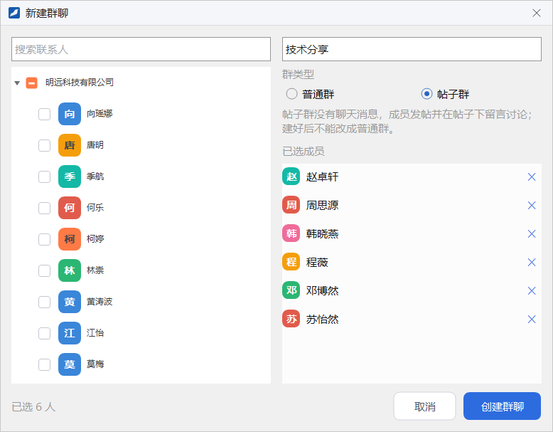

群列表里的帖子群在群号前写着 帖子群，双击它打开的是帖子群窗口而不是群聊窗口。
普通群双击即可打开群聊窗口；也可以在群上点右键，选 进入群聊。
认识群聊窗口
群聊窗口分为三部分：上方是头部按钮，中间左侧是消息区和输入区，右侧是成员、群文件、公告、备忘、问答五个页签。
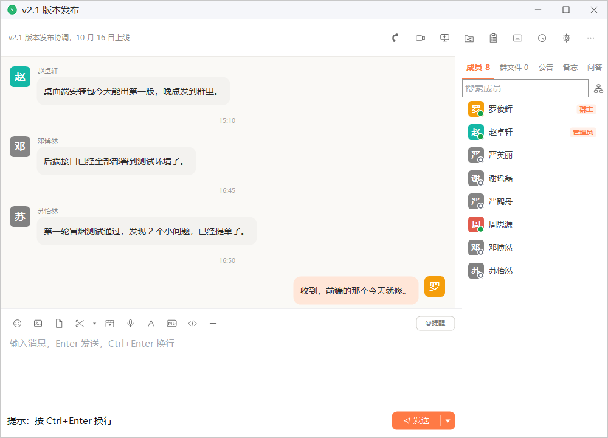
1 2 3 4 5 6 7 8 9 10 11 12 13 14 15 16 17 18 19头部
- 群简介：头部左侧显示本群的简介，在群管理的「基本信息」里修改
- 语音通话：发起群语音通话，见「语音与视频通话」
- 视频通话：发起群视频通话，最多 16 人
- 共享屏幕：把屏幕共享给群成员，见「屏幕共享」
- 文件共享：查看或发起本群的文件共享，见「文件共享」
- 发起接龙：见本章「接龙」
- 字幕模式：在桌面上以字幕显示本群的新消息，再点一次退出，见「字幕模式与字幕编辑」
- 消息记录：打开本群的聊天记录，见「聊天记录管理」
- 群管理（齿轮）：仅群主和管理员可见，见「群管理」
输入区工具栏
- 表情：插入表情
- 图片：选择图片发到群里
- 上传群文件：把文件上传到本群的群文件库
- 截图：右侧的 ▾ 是截图选项，见「截图与图片文字识别」
- 屏幕录制：见「屏幕录制」
- 语音消息：见「语音消息」
- 字体设置：设置本群的聊天字体
- Markdown 编辑器：打开 Markdown 编辑器并预先选好本群，见「Markdown 文档」
- 发送代码：见「代码片段」
- @提醒：弹出成员列表，选择要提醒的人
输入框的用法与单聊相同：按 Enter 发送，按 Ctrl+Enter 换行，详见「单聊：收发消息」。
把文件拖进输入框时，窗口会提示「松开发送：图片进聊天，文件进群文件」：图片作为聊天消息发出，其他文件上传到群文件库。群聊不能发送文件夹，拖进来的文件夹会被跳过并给出提示。
@提醒成员
群里消息多时，用 @ 点名要找的人，对方能在会话列表里一眼看到与自己有关的消息。
- 在输入框里输入
@，或者点工具栏右侧的 @提醒，输入框下方弹出候选列表。 - 列表依次是 所有人、本群的机器人（如果有）和其他群成员，点选要提醒的人。
- 输入框里出现彩色的 @周思源，接着输入要说的话，按 Enter 发送。
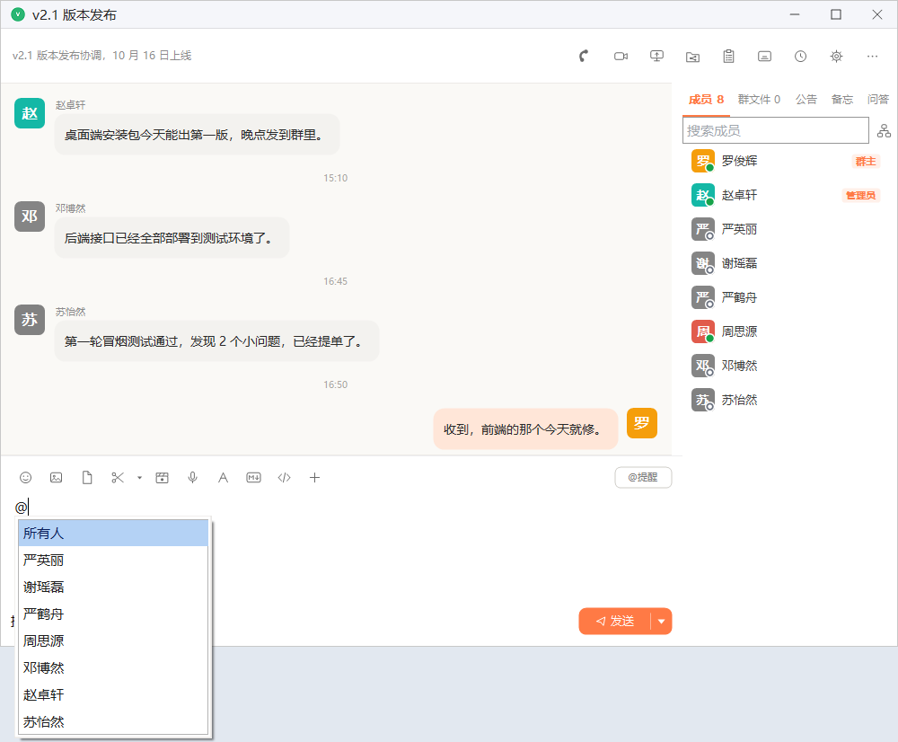
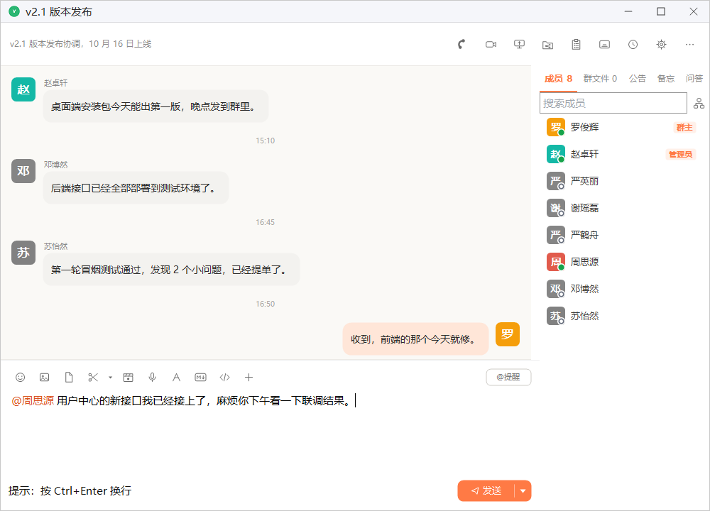
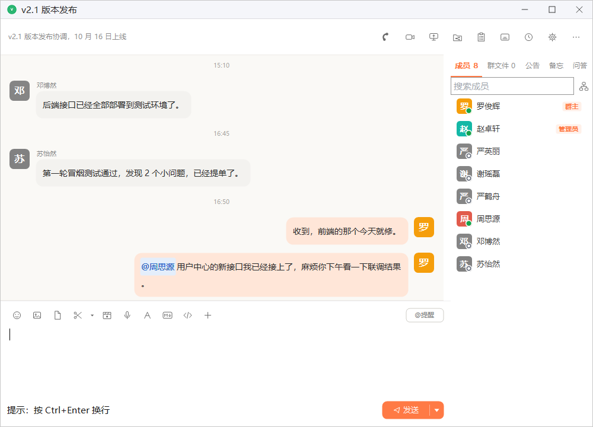
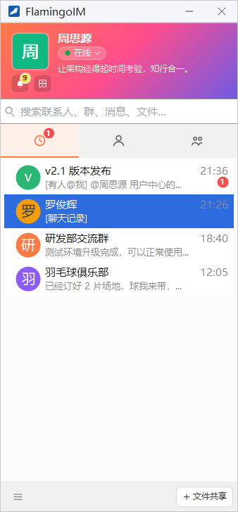
被 @ 的人在会话列表里会看到这个群的摘要前面多了 [有人@我]，一眼就能分辨出与自己有关的消息。
谁能 @所有人：群主和管理员总能使用「所有人」；群主或管理员在群管理的「群权限」里把「谁能 @ 全体成员」设为「所有人」后，普通成员也可以使用。
@机器人：本群添加了群机器人后，它也会出现在候选列表里，@ 它就能按规则得到回复，见「机器人」。
在右侧成员列表的右键菜单里点 @TA，同样可以把对方插入到输入框中。
成员页签
右侧边栏的 成员 页签列出全部群成员，页签名后面的数字是人数。成员头像右下角的圆点表示在线状态，群主和管理员的名字右侧分别标有 群主、管理员。
- 在 搜索成员 框里输入姓名，可以快速找到某人。
- 搜索框右侧的按钮在 按部门显示 和 平铺显示 之间切换。
- 群里有机器人时，列表顶部多出「机器人 N」一组，点某个机器人可以查看它的资料卡。
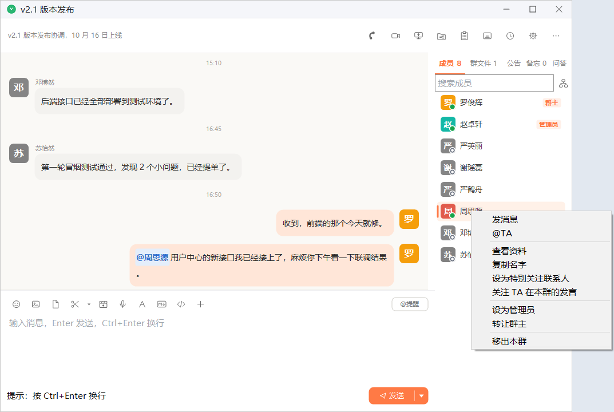
在成员上点右键可以执行下面的操作。菜单会按你和对方的群角色变化，看不到的项表示你没有这项权限：
| 菜单项 | 说明 |
|---|---|
| 发消息 | 打开与对方的单聊窗口 |
| @TA | 在输入框中插入「@对方」 |
| 查看资料 | 打开对方的资料窗口 |
| 复制名字 | 把对方的名字复制到剪贴板 |
| 设为特别关注联系人 | 见「通讯录与联系人」 |
| 关注 TA 在本群的发言 | 把对方加入本群的「关注的成员」。本群的消息提醒设为「只提醒 @我和关注的人」时，关注的成员发言也会提醒你 |
| 设为管理员 / 撤销管理员 | 仅群主可用 |
| 转让群主 | 仅群主可用，把群主身份转给对方 |
| 移出本群 | 群主可以移出任何成员；管理员只能移出普通成员，不能移出其他管理员 |
群文件页签
群文件 页签是本群的文件库，页签名后面的数字是文件数。
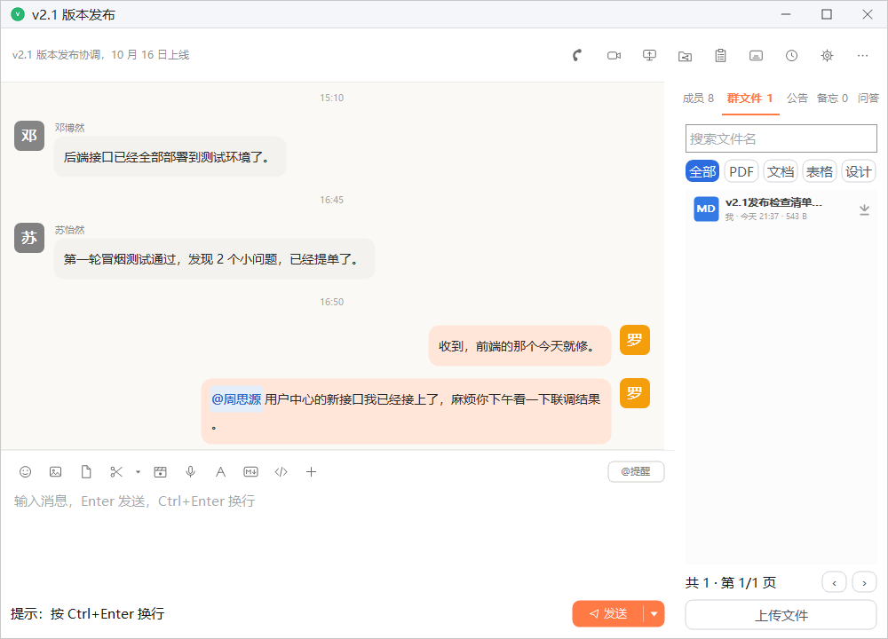
- 用 搜索文件名 查找文件，或用下方的胶囊按类型筛选：全部、PDF、文档、表格、设计。
- 每一行显示文件名、上传者、上传时间和大小，点右侧的下载箭头下载。
- 文件多时分页显示，底部显示「共 N · 第 X/Y 页」，用左右箭头翻页。
- 点底部的 上传文件，或点工具栏的「上传群文件」按钮，都可以上传文件。
- 上传者本人、群主和管理员可以删除文件：鼠标停在文件那一行时，下载箭头左侧会出现垃圾桶图标，点它并确认即可。删除后全群成员都看不到这个文件。
公告页签
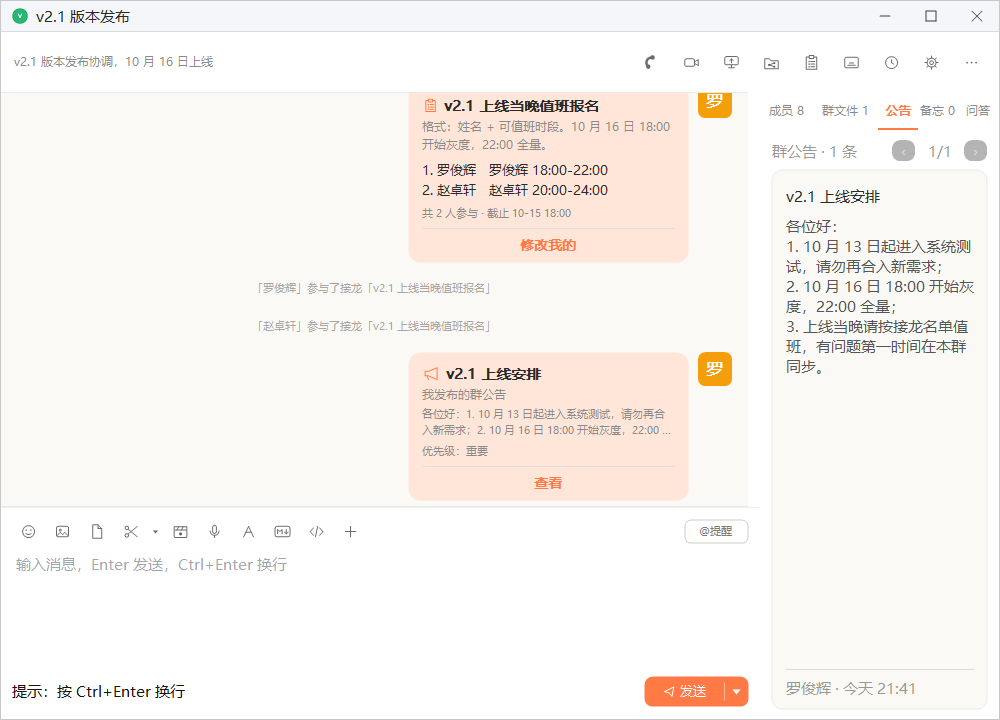
公告 页签按发布顺序显示本群的群公告，顶部写着「群公告 · N 条」，用右上角的箭头翻看。这里是只读的，底部显示发布人和时间。群主和管理员在群管理的「群公告」页发布公告，发布后群里会出现一张公告卡片，点卡片上的 查看 可以阅读全文。发布、入群必读等管理操作见「群管理 → 群公告」。
备忘页签（群备忘）
群备忘用来在约定时间提醒群成员做某件事，例如上线开始前提醒值班同学到岗。
- 新建、修改、删除：仅群主和管理员
- 查看：全体成员
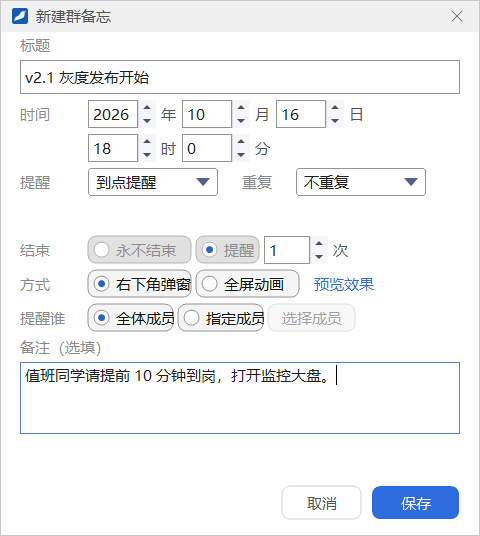
- 打开右侧的 备忘 页签，点底部的 ＋ 新建群备忘。
- 在「新建群备忘」窗口里填写 标题，设置 时间、提醒、重复、结束 和 方式（右下角弹窗 或 全屏动画，点 预览效果 可以先看看全屏动画的样子）。各项的含义与个人备忘相同，见「备忘与提醒」。
- 在 提醒谁 里选择 全体成员，或选 指定成员 后点 选择成员 挑选要提醒的人。
- 按需填写 备注（选填），点 保存。
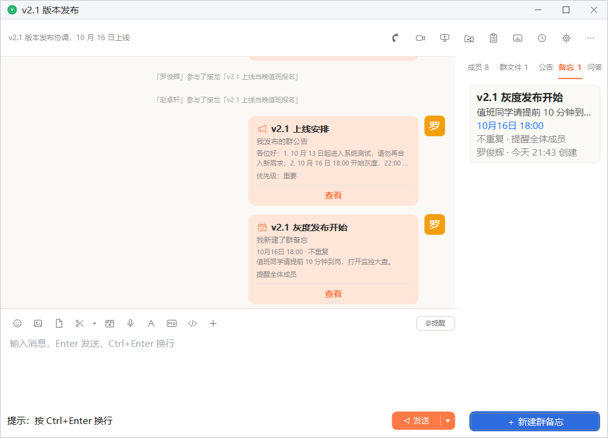
保存后，群里会出现一张群备忘卡片，写明时间、重复规则、备注与提醒对象，点 查看 可以打开详情。到了提醒时间，被提醒的成员会收到弹窗或全屏动画提醒。群主和管理员可以在备忘页签的卡片上修改或删除备忘；删除后被提醒的成员都不会再收到这条提醒。被提醒的群备忘也会出现在每个人自己的「备忘与提醒」窗口里，在那里只能查看。
问答页签（群问答）
群问答用来整理群里经常被问到的问题，成员可以随时搜索，也可以一键把答案发到群里。
- 新建、修改、删除：仅群主和管理员
- 搜索、发到群里：全体成员
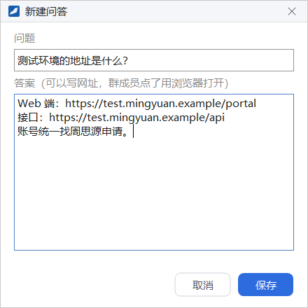
- 打开右侧的 问答 页签，点底部的 ＋ 新建问答。
- 在「新建问答」窗口里填写 问题 和 答案。答案里可以写网址，群成员点了会用浏览器打开。
- 点 保存，问答页签里出现这条问答。
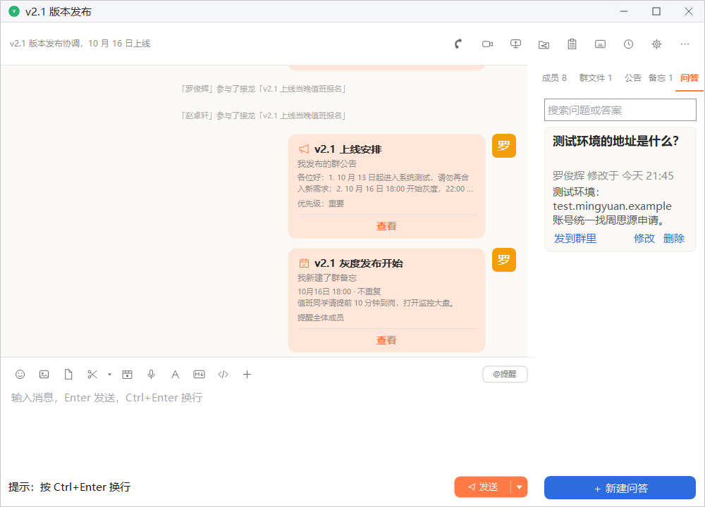
在页签顶部的 搜索问题或答案 框里输入关键字可以筛选问答。每张卡片下方有三个按钮：
- 发到群里：所有成员都可以用，把这条问答以「问：…… 答：……」的形式发到群里。
- 修改、删除：仅群主和管理员可见。
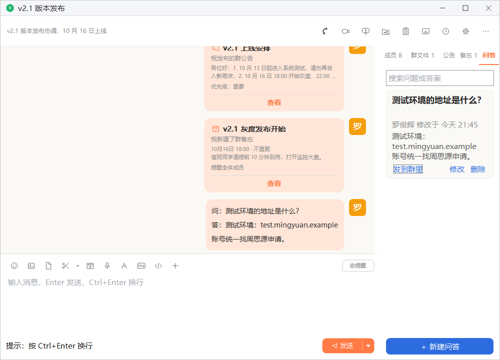
接龙
接龙适合报名、统计、排班一类需要每人填一行的事情。群里任何成员都可以发起接龙。
发起接龙
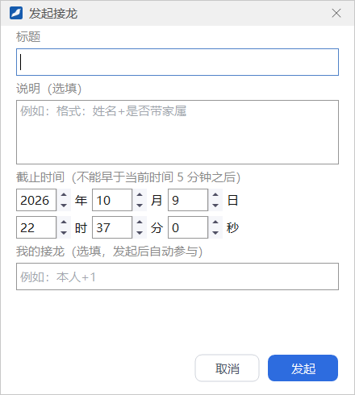
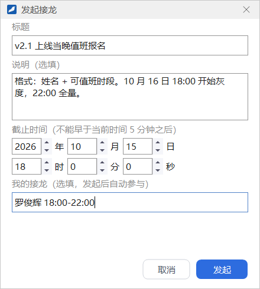
- 点群聊窗头部的 发起接龙 按钮（写字板图标）。
- 填写 标题，按需填写 说明（选填），例如约定每行的格式。
- 设置 截止时间，它不能早于当前时间 5 分钟之后。
- 按需填写 我的接龙，发起后你会自动参与，这一行就是你的内容。
- 点 发起，群里出现一张接龙卡片。
参与接龙
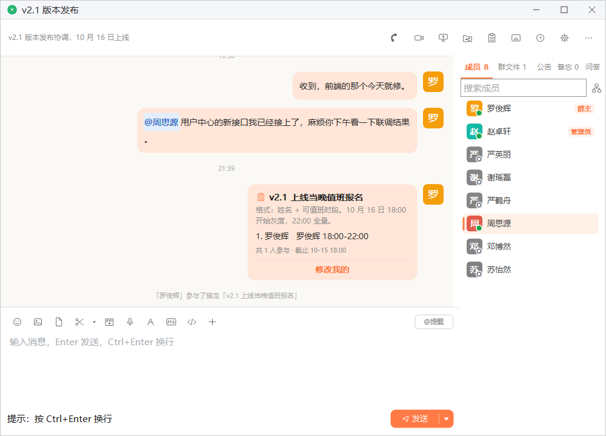
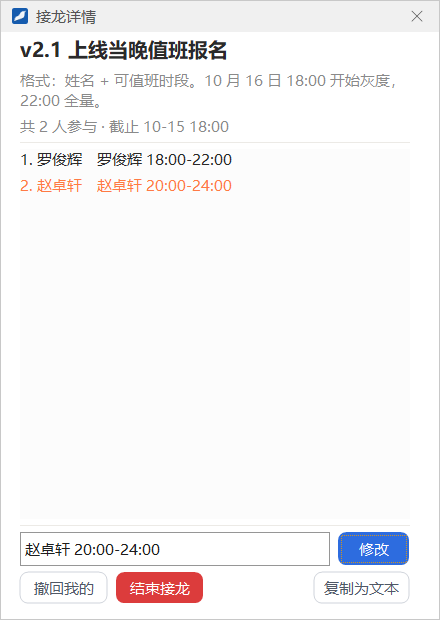
还没参与时，卡片底部是 参与接龙；参与之后变成 修改我的。点卡片（或点群里「某某参与了接龙」那一行提示）会打开「接龙详情」窗口：
- 在 填写你的接龙内容 框里写一行内容，点 提交；已经参与过时按钮是 修改，用来改自己那一行。内容不能换行。
- 撤回我的：删除自己的那一行。
- 复制为文本：把标题、说明和完整名单复制成纯文本，方便贴到别处。
- 结束接龙：只有发起人、群主和管理员能看到。结束后任何人都不能再参与、修改或撤回。
每个接龙最多 200 人参与；过了截止时间也不能再参与。被禁言的成员不能参与接龙。
群列表的右键菜单
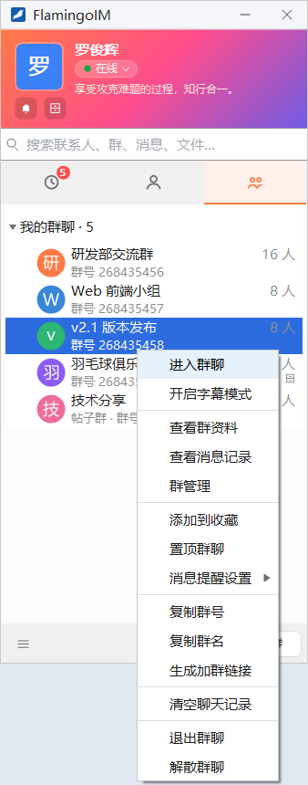
在主面板群组页签的某个群上点右键，可以不打开群聊窗口直接完成下面这些操作：
| 菜单项 | 说明 |
|---|---|
| 进入群聊 | 打开群聊窗口（帖子群显示为「打开帖子群」） |
| 开启字幕模式 | 只在桌面上显示本群消息的字幕，不打开群聊窗口 |
| 查看群资料 | 打开群资料窗口，见下文 |
| 查看消息记录 | 打开本群的聊天记录 |
| 群管理 | 仅群主和管理员可见 |
| 添加到收藏 | 把本群加入联系人页签顶部的「我的收藏」，已收藏时显示为「取消收藏」 |
| 置顶群聊 | 让本群在会话列表中置顶 |
| 消息提醒设置 ▸ | 选择本群的提醒方式，见「会话列表与消息提醒」 |
| 复制群号 / 复制群名 | 复制到剪贴板 |
| 生成加群链接 | 见本章「加群链接」 |
| 清空聊天记录 | 只清空你这一方的记录，你登录的其他设备会同步清空，其他群成员不受影响，清空后无法恢复 |
| 退出群聊 | 离开本群 |
| 解散群聊 | 仅群主可见 |
群资料
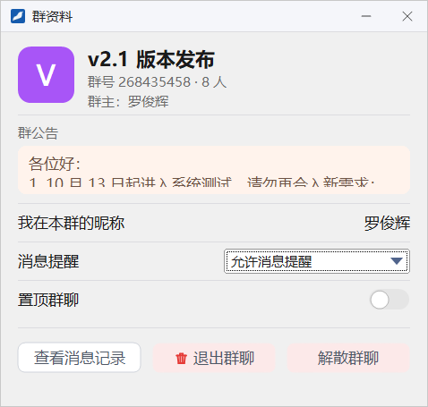
群列表右键选 查看群资料 打开群资料窗口：
- 顶部显示群名、「群号 · N 人」和群主。点群名可以复制群名，点群号那一行可以复制群号。
- 群简介：显示本群的简介，没有填写时显示「暂无群简介」；简介在群管理的「基本信息」里修改。
- 群公告：显示最新一条群公告。
- 我在本群的昵称：点这一行可以直接修改你在本群显示的昵称。
- 消息提醒：选择本群的提醒方式。
- 置顶群聊：打开开关后本群在会话列表中置顶。
- 底部按钮：查看消息记录、退出群聊，群主另有 解散群聊。
加群链接
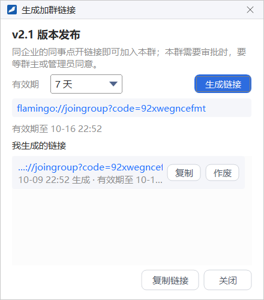
群里的任何成员都可以生成加群链接，把链接发给同企业的同事，对方点开就能加入本群。
- 在群列表的右键菜单里点 生成加群链接。
- 在 有效期 里选择 1 天、7 天 或 永久有效，点 生成链接。
- 点 复制链接，把链接粘贴到聊天里发给同事。对方在聊天里点这个链接即可加群。
窗口下方的 我生成的链接 列出你在本群生成、仍然有效的链接，每条都可以 复制 或 作废。作废后再点这个链接将无法加群，已经通过它加入的成员不受影响。